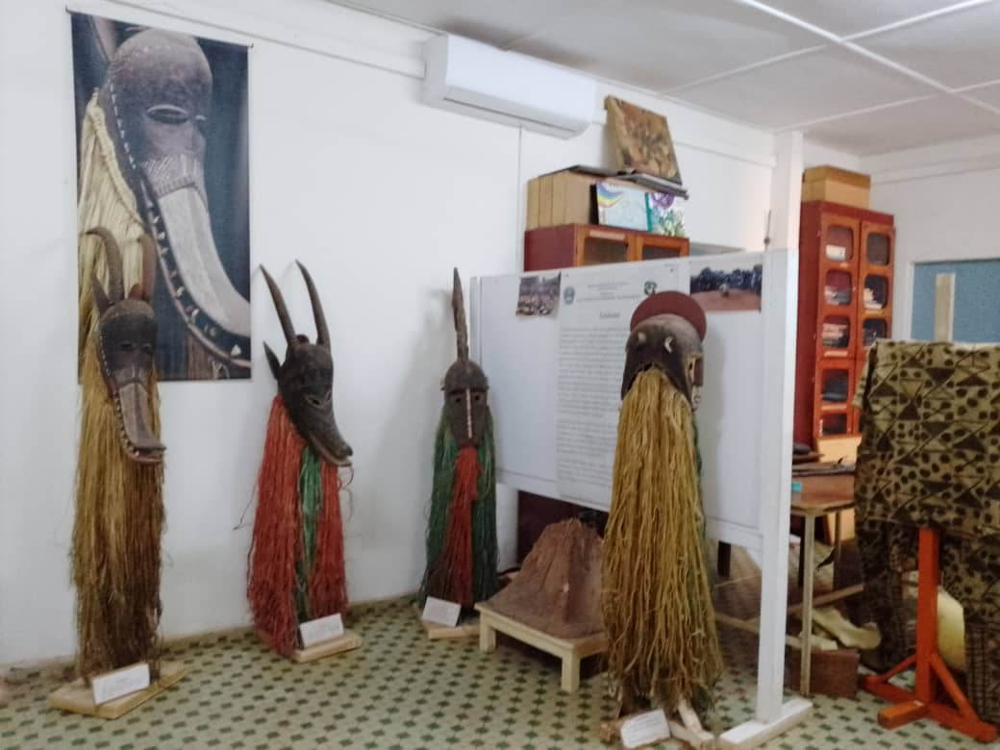
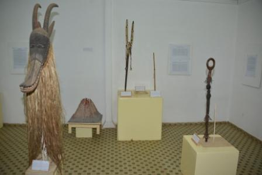

Musée communal Sogossira Sanon est un musée situé à Bobo-Dioulasso, deuxième ville du Burkina Faso. Il a ouvert ses portes en 1990 et porte le nom de son fondateur et directeur, Sogossira Sanon, un artiste sculpteur burkinabè renommé.
Le musée a été créé le 26 mars 1990 à l'occasion de la 5e édition de la Semaine nationale de la culture, sous l'appelation du musée provincial de houet, grâce aux efforts conjugués de trois communautés : les Bobo, les Peuhls et les Sénoufos. Ces communautés ont souhaité mettre en place ce lieu de patrimoine afin de permettre aux générations futures de connaitre les richesses laissées par les aïeux. Le 17 mai 2011, le musée est baptisé musée communal Sogossira Sanon, du nom d'un chef de canton de Bobo-Dioulasso et fervent défenseur des cultures locales.
La mosquée de Dioulassoba est un chef-d’œuvre de l’architecture soudanaise, caractérisée par l’utilisation du banco, un mélange de terre argileuse et de paille. Ses murs épais, ses minarets élancés et ses contreforts massifs témoignent d’une construction pensée pour résister aux intempéries tout en offrant une esthétique unique. Les poutres de bois qui émergent des murs ne sont pas seulement décoratives : elles servent aussi à renforcer la structure et à faciliter les réparations. Chaque année, la communauté se mobilise pour entretenir ce patrimoine vivant, perpétuant ainsi un savoir-faire ancestral.
Le Musée Communal de Sogossiran-Sanon est un lieu central pour la conservation, la valorisation et la transmission du patrimoine culturel et historique des peuples de l’Ouest du Burkina Faso, contribuant à l’éducation, à la cohésion sociale et au développement culturel.
